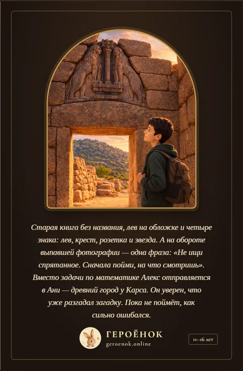

Каждая именная книга умеет говорить: голос рассказчика читает историю про вашего ребёнка вслух — с его именем, друзьями и привычками внутри.
▶ Глава 1 · 8:51
«…Алекс ещё раз посмотрел на льва. Ему казалось, что он уже разгадал первую часть загадки. Через несколько дней он поймёт, насколько ошибался».
— из аудиокниги «Алекс и тайна Ани»
Настоящая книга «Алекс и тайна Ани» (Алексу 13 лет), озвученная голосом рассказчика — посвящение и шесть глав. Публикуем с согласия родителей.

Когда голос уже устал читать вслух в десятый раз за неделю — включите аудиокнигу вместо себя.
В машине, в самолёте, на прогулке с коляской — история звучит без экрана перед глазами.
Ребёнок может следить за текстом на экране, слушая, как его произносят — это помогает с чтением.
Без доплат — и в «Сказку», и в «Большую историю».
